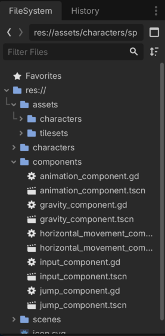
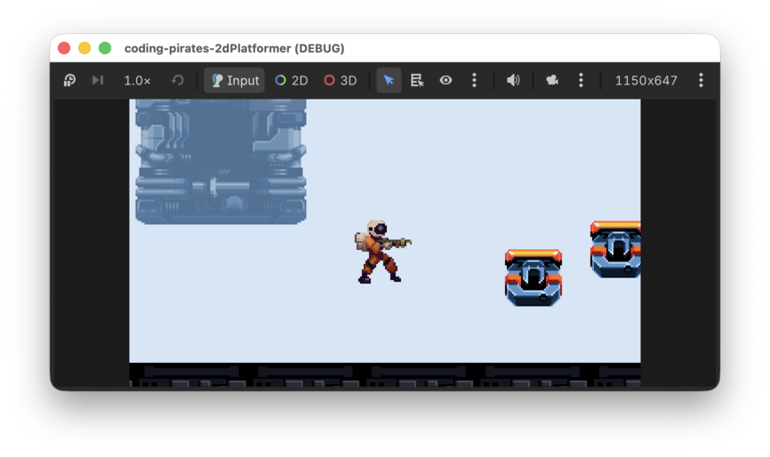
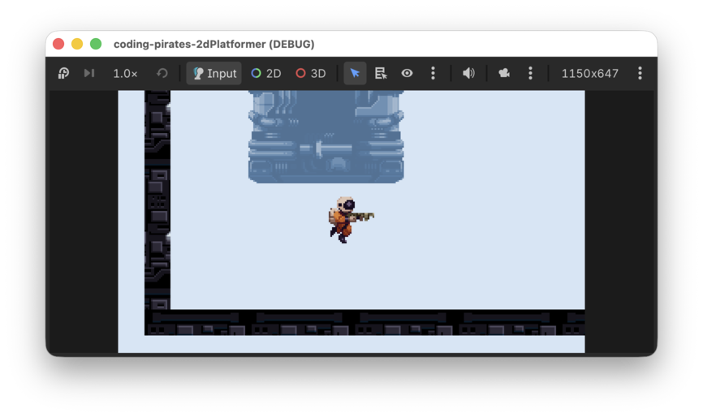

Godot 2D Platformer - level 8 hop!
I level 7 fik vores Player
lidt mere liv og kan nu løbe i begge retninger. Det er jo meget godt men
den skal vel også kunne hoppe. Lad os få det til at ske i denne
lektion.
Du kender godt første spørgsmål.
Hvad er det vi gerne vil?
Få vores spiller til at hoppe!
Godt, hvad kræver det?
Ja det kræver vel at vi ved om der er trykket på en tast så vi skal
bede vores CharacterBody2D om at hoppe.
Godt, det var den første ting vi skal lave så:
OK, når så vi har det, hvad vil vi så, eller, sagt på en anden måde,
hvordan fik vi vores CharacterBody2D til at bevæge sig fra
side til side? Lad os lige kigge i vores
HorizontalMovementComponent:
body.velocity.x = move_toward(body.velocity.x, direction * speed, horizontal_change_speed)
Ah ja, det var velocity.x vi skruede på.
Men hvis vi så vil have vores CharacterBody2D til at
hoppe op, så må det vel være velocity.y vi skal
ændre, og det skal vel være et negativt tal sådan at vi bevæger os opad,
tættere på 0 som er øverste venstre hjørne.
Så noget kode som det her:
body.velocity.y = -100
Kunne måske gøre det?
Men hvordan kommer vi så ned igen?
Det er vel vores GravityComponent der styrer det, husk
at den har den her funktion:
func handle_gravity(body: CharacterBody2D, delta: float) -> void:
if not body.is_on_floor():
body.velocity.y += gravitySå...hvis body ikke står på gulvet, så træk den ned mod
gulvet. Nemt!
Lad os opdatere vores liste:
Og så kan vi vist godt starte.
Find ud af om der er trykket på "up"
Vi laver en ny funktion i vores InputComponent.
- Funktionen kalder vi
jump_was_pressed - den tager ingen input
- den returnerer en bool værdi (bool er en forkortelse for Boolean som betyder at værdien kan være sand eller falsk, ja eller nej, 1 eller 0)
Prøv og se om du selv kan skrive signaturen.
Vores funktion skal bare svare på et simpelt spørgsmål: Har spilleren trykket på vores "up" knap.
Igen, prøv og se om du selv kan skrive den linie kode der skal til, kig evt. i vores gamle 2D space shooter, der gjorde vi det samme.
Her er vores bud:
func jump_was_pressed() -> bool:
return Input.is_action_just_pressed("up")Hak ved første skridt
Lav en ny
JumpComponent
Du har gjordet det nogle gange efterhånden.
- Lav en ny Node2D
- Kald den "JumpComponent"
- Gem dem som
jump_component.tscnunder "components" - Tilføj et script til "JumpComponent"
Det ser sådan her ud:

Script
Scriptet kan vi også starte på, det skal have en
class_name som de andre
class_name JumpComponent
extends NodeOg så skal vi have lavet en funktion:
- som vi kalder
handle_jump - den skal tage to input parametre
- en
CharacterBody2Dsom vi kalderbody - en
boolsom vi kalderjump_requested
- en
- og den skal ikke ikke returnere noget
Igen, prøv selv, du kan godt :)
Hvad var det så vores funktion skulle gøre?
Vi blev enige om at den skulle opdatere velocity.y på
den body den arbejder med hvis der var trykket på
"up".
Men...lille krølle!
Den skal vel kun opdatere velocity.y hvis vi
står på jorden. Hvis vi beder den om at opdatere
velocity.y mens vi er i luften, jamen så bliver vi
vel ved med at flyve opad, det dur ikke.
Så...vi er nødt til at kigge på om body.is_on_floor() og
kun hvis det er tilfældet vil vi ændre på velocity.y.
Så altså:
- Lav en
@export var jump_velocity: float = -350så vi kan justere hvor højt der skal hoppes. - Tilføj til vores funktion som du lige har lavet en signatur til så den:
- Kigger om
jump_requestedog body.is_on_floor() - Og hvis det er sandt, så opdaterer den
vody.velocity.ytil at være lig medjump_velocity
Prøv selv, du kan stadig godt.
Her er vores færdige script
class_name JumpComponent
extends Node
@export_subgroup("Settings")
@export var jump_velocity: float = -350.0
func handle_jump(body: CharacterBody2D, jump_requested: bool) -> void:
if jump_requested and body.is_on_floor():
body.velocity.y = jump_velocityDet var andet skridt
Tilføj
JumpComponent til Player
Vi har været der før.
Præcis på samme måde som vi tilføjede GravityComponent
tilføjer vi nu JumpComponent til vores Player
ved at:
- Tilføje en
@export var jump_component: JumpComponenttil voresPlayerscript - "Instantiate Child scene" og tilføje
jump_component.tscnpå voresPlayer - Assigne
JumpComponenttil "Jump Component" i "Inspectoren" for vores "Player"
Opdater Player script
Nu kan vi i _physics_process kalde
handle_jump på vores jump_component. Tilføj
den her linie i _physics_process funktionen:
jump_component.handle_jump(self, input_component.jump_was_pressed())Og kør så dit spil og prøv og hop

Det ser jo sådan set OK ud...bortset fra at når vi hopper løber vi stadig gennem luften. Det kan vi godt gøre bedre ved at tilføje et par nye animationer.
Opdater vores
AnimationComponent
Hvad vil vi?
Vi vil gerne tilføje to nye animationer:
- "jump" til når vi bevæger os opad i vores hop
- "fall" til når vi bevæger os nedad i vores hop
Tilføj dem. du skal bruge space-marine-jump.png til dem
begge to og så skal du kun vælge nogle frames.
- til "jump" vælger du de tre første
- til "fall" vælger du de tre sidste
Men hvordan ved vi om vi hopper eller falder?
Nu har vi vores animationer, men de kræver jo så at vi kan se om man bevæger sig opad eller nedad...hvem kan fortælle os det mon?
GravityComponent kunne være et godt bud. Vi har den her
funktion nu:
func handle_gravity(body: CharacterBody2D, delta: float) -> void:
if not body.is_on_floor():
body.velocity.y += gravity * deltaSå den kigger allerede på om man ikke står på en platform.
Vi kan vel udvide den, så den også lige gemmer to variabler:
var is_jumping: boolhvis vi ikke eron_floorog vi hopper opad, altså hvis velocity.y < 0var is_falling: boolhvis vi ikke eron_floorog vi falder nedad, altså hvis velocity.y > 0
Udvid GravityComponent
Vi kan:
- tilføje
var is_jumping: bool - tilføje
var is_falling: bool - hvis ikke vi
is_on_floor()så kigger vi på hvadbody.velocity.yer:- hvis den er < 0 bevæger vi os opad og så er
is_jumping = true - hvis den er > 0 er tyngdekraften begyndt at trække os nedad og så
er
is_falling = true
- hvis den er < 0 bevæger vi os opad og så er
- hvis vi
is_on_floor()så er vi lige flinke og sætter dem begge to til false.
Prøv selv, her er vores script
Det ser sådan her ud:
class_name GravityComponent
extends Node
@export_subgroup("Settings")
@export var gravity: float = 1000
var is_jumping: bool = false
var is_falling: bool = false
func handle_gravity(body: CharacterBody2D, delta: float) -> void:
if not body.is_on_floor():
body.velocity.y += gravity * delta
if body.velocity.y < 0:
# Vi flytter os opad
is_jumping = true
is_falling = false
elif body.velocity.y > 0:
# Vi falder nedad
is_jumping = false
is_falling = true
else:
is_jumping = false
is_falling = falseTilbage til
AnimationComponent
Eftersom vores Walker ikke skal kunne hoppe vil
vi ikke have logikken for hvilken animation der skal vises ind i den
eksisterende funktion, så vi laver en ny:
- funktionen skal hedde
handle_jump_animation - den skal tage to input parametre:
is_jumpingaf typenboolis_fallingaf typenbool
- og den skal ikke returnere nogen værdi
- hvis
is_jumpingså spil "jump" animationen - hvis
is_fallingså spil "fall" animationen
Prøv at skriv den i scriptet for AnimationComponent, her
er vores bud:
func handle_jump_animation(is_jumping: bool, is_falling: bool) -> void:
if is_jumping:
sprite.play("jump")
elif is_falling:
sprite.play("fall")Tilføj til Player
script
Sidste skridt, brug vores nye funktion i vores Player
script, prøv at se om du kan regne ud hvad der skal tilføjes i
_process funktionen.
Her er vores bud hvis du giver fortabt:
func _process(delta: float) -> void:
animation_component.handle_move_animation(input_component.horizontal_direction)
animation_component.handle_jump_animation(gravity_component.is_jumping, gravity_component.is_falling)Prøv nu at kør dit spil igen og nyd de fine animationer

Tada
Vores spil begynder at ligne noget nu. For at citere the Julekalender
I can hop I can run and it's very very fun
I næste lektion skal vi til at skyde, vi ses!